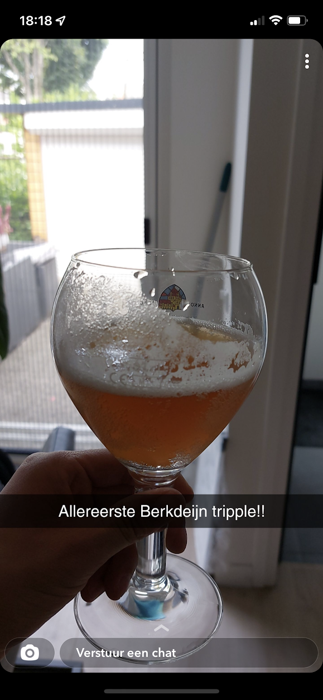
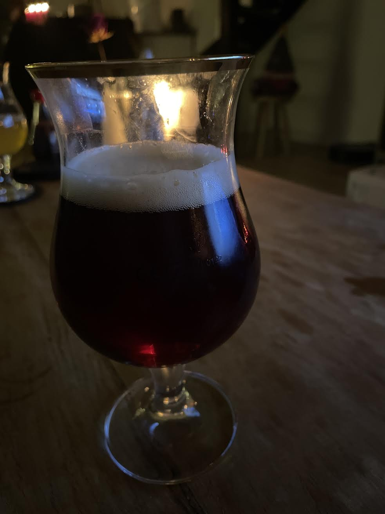
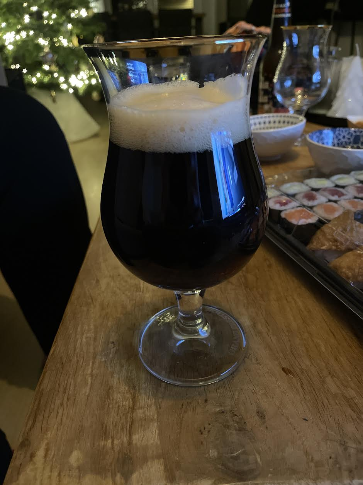

Er zijn diverse bieren die wij inmiddels hebben gebrouwen. Hierbij enekele voorbeelden.
|  | Het begon allemaal met het eerste samen gebrouwde biertje: Een tripel bier. Voor het eerst hebben we samen gebrouwen met een nieuwe ketel van maar liefst 20 liter (groter mocht niet van de vrouwen). De tripel had een sterke smaak maar voor een eerste brouwsel zeker niet verkeerd. |
|  | De "Double Trouble" was het eerste donkere biertje wat wij hebben gebrouwen. De double trouble is een dubbel bier wat ons eerste donkere biertje was die wij hebben gemaakt. Ook de double trouble heeft een sterke smaak en heeft maar liefst ruim 8% alcohol. Tevens kan het aroma van diverse kruiden worden geproefd. |
|  |
Ter gelegenheid van de kerstborrel hebben wij voor het eerst een bock bier gemaakt. Deze bock is wat lichter van smaak en heeft een smaak van caramel als afdronk. |